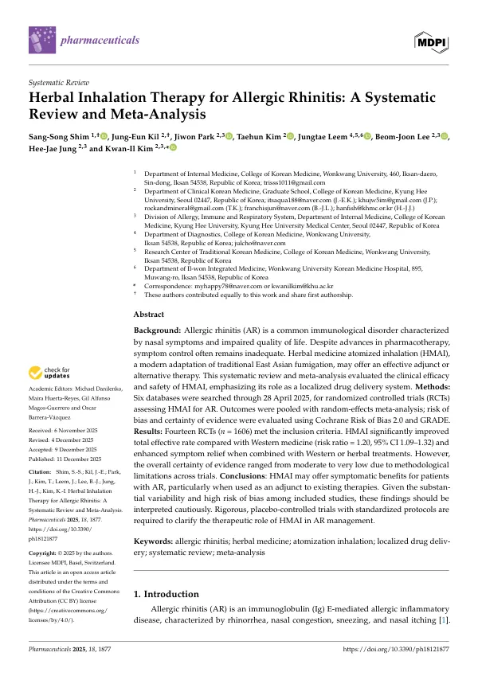

Herbal Inhalation Therapy for Allergic Rhinitis: A Systematic Review and Meta-Analysis
Shim SS, Kil JE, Park J, Kim T, Leem J, Lee BJ, Jung HJ, Kim KI
Pharmaceuticals 18(12):1877

첫 장 · 오픈액세스First page · open access
논문 소개Summary
한약을 안개 형태로 만들어 코로 흡입하는 치료가 알레르기 비염에 도움이 되는지 체계적으로 살폈습니다. 전통적인 훈증법을 현대 장비로 옮긴 방식으로, 약을 코 점막에 직접 닿게 하는 국소 전달이 특징입니다. 2025년 4월 28일까지 데이터베이스 6곳을 검색해 무작위배정 임상시험 14편 1,606명을 모았습니다. 총유효율은 양약 치료보다 높았고(RR 1.20, 95% CI 1.09~1.32) 양약이나 한약에 더해 썼을 때도 증상 완화가 더 컸습니다. 다만 연구 사이 편차가 크고 비뚤림 위험이 높아 근거 수준은 중간에서 매우 낮음에 머물렀습니다. 저자들은 표준화된 위약 대조 시험이 필요하다고 적었습니다.
A systematic review of herbal medicine atomised inhalation for allergic rhinitis, a modern adaptation of traditional fumigation that delivers medicine directly to the nasal mucosa. Six databases were searched through 28 April 2025, yielding 14 randomised controlled trials with 1,606 participants. The total effective rate was higher than with Western medicine (RR 1.20, 95% CI 1.09 to 1.32), and symptom relief was greater when the inhalation was added to Western or herbal treatment. Variability between trials was substantial and risk of bias high, leaving certainty of evidence between moderate and very low. The authors call for rigorous placebo-controlled trials with standardised protocols.
인용Cite
Shim SS, Kil JE, Park J, Kim T, Leem J, Lee BJ, Jung HJ, Kim KI. Herbal Inhalation Therapy for Allergic Rhinitis: A Systematic Review and Meta-Analysis. Pharmaceuticals. 2025;18(12):1877. doi:10.3390/ph18121877